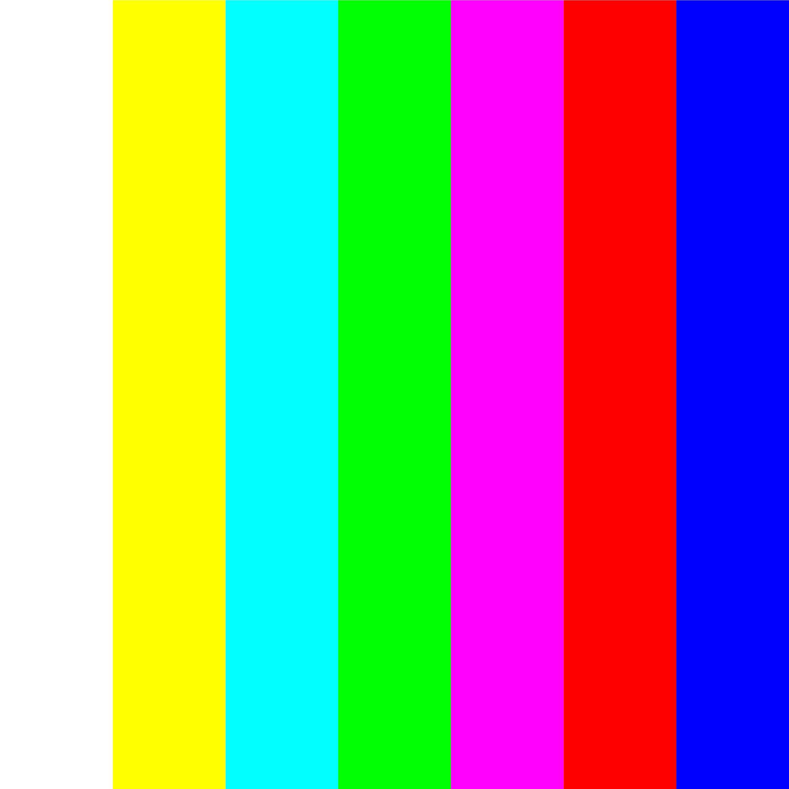
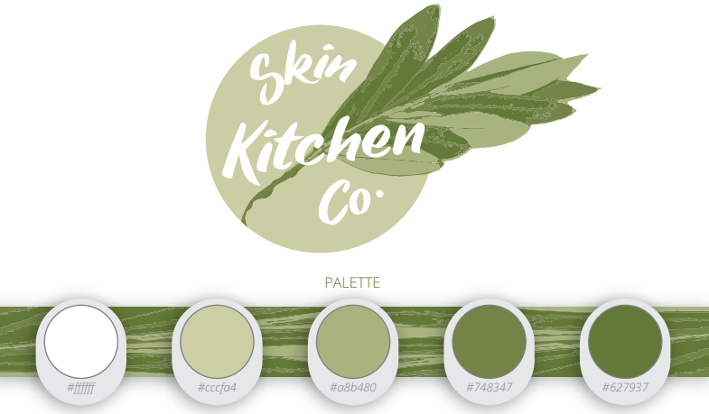
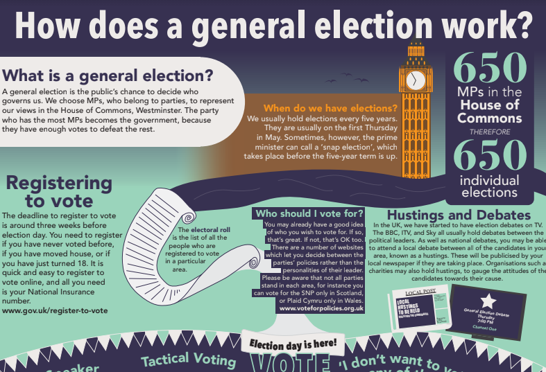
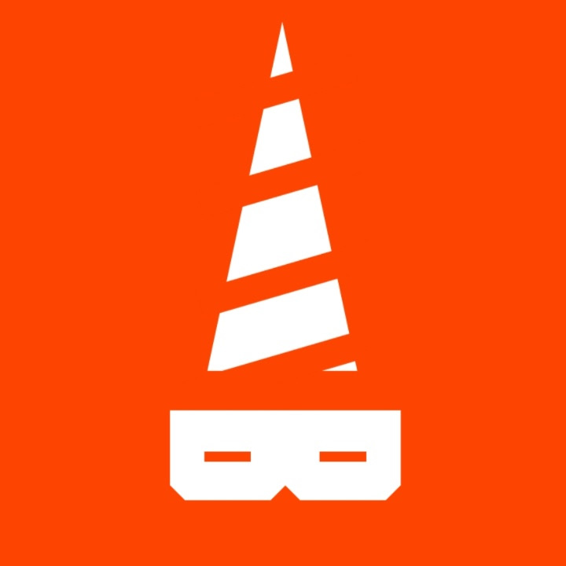

I'm Bradley Sansom.
Here's some stuff I've made...
A font that melts
Set a brief to bring the words of a Greta Thunberg speech to life, I created a typeface inspired by the melting of glaciers. In order to draw attention to the urgency needed to mitigate climate change, I animated the fonts into a disappearing installation.
Visual Thinking 3
Manchester School of Art
Manchester School of Art
Magazines project
Designing spreads for two magazine articles; one provided for us, about the films of Wes Anderson, and one that I wrote myself, about Victoria Wood's use of food as a comedic device in her sitcom dinnerladies.
Visual Thinking 2
Manchester School of Art
Manchester School of Art

26 + 1
My work for the Found Alphabet and Letterspace projects of my degree course, all about exploring
typography as an introduction to the first year. I made my own digital sketchbooks rather than
doing it on Padlet or a PDF or whatever.
Visual Thinking 1
Manchester School of Art
Manchester School of Art

Channel 8
The work I did in my second year of A-level Graphic Design - producing the branding for a
fictional local TV channel. I extended the brief to include coded elements incorporating
randomisation and graphic generation to blend the worlds of graphics and computing. I got an A*
for this subject.
A-level Graphic Design
New College Bradford
New College Bradford

My Local Area
My A-level Computer Science NEA. A web app which takes a user's postcode and retrieves data from
a range of APIs about their neighbourhood, such as weather, local politicians, council areas,
nearby GPs and dentists, and local community groups. The project received a grade of A*.
Please note that some features might not work I didn't use any paid API tiers. And I had to
comment out some of the NHS functions as they have really low usage caps.
A-level Computer Science
New College Bradford
New College Bradford

Just a Minute
A quick game I made in a couple of hours. Based on the BBC Radio 4 panel
show of the same
name,
where players have to speak for sixty seconds on a subject without hesitation, repetition, or
deviation, this
web app allows you to play along at home, with between two and four players.
Personal project

Wayfinding
One of the projects I did for graphic design A-level; it involved producing a set of wayfinding
signs for various locations in Bradford city centre with the aim of making it a nicer place for
pedestrians.
A-level Graphic Design
New College Bradford
New College Bradford

Branding
As part of A-level graphic design, I responded to a live brief to design the branding for a
local skincare company. The owner really liked my designs :)
A-level Graphic Design
New College Bradford
New College Bradford

Infographics
One of the first projects I did in A-level graphic design, I made an infographic explaining how
a UK general election works to first-time voters.
A-level Graphic Design
New College Bradford
New College Bradford

Election AR
Having been asked to "make a poster" in A-level politics, I (as usual) took it too far, making a
set of augmented reality fact files using AR.js that revealed more content when scanned.
A-level Government & Politics
New College Bradford
New College Bradford

@psblyric
A (moderately successful) Twitter bot that I run, which posts hourly snippets of lyrics from the
back catalogue of 80s synth pop stars the Pet Shop Boys. I host it on my phone, running through
the Tasker app and IFTTT.
Personal project

... and before all that
I've been making stuff and tinkering about since I was a young child.
I used to use PowerPoint quite a bit, around the age of five or six. I suppose it's where my interest in graphic design began.
I've raided my old hard drives for stuff I made back then, some of it unintentionally humourous, and collected it on a Twitter account.
I used to use PowerPoint quite a bit, around the age of five or six. I suppose it's where my interest in graphic design began.
I've raided my old hard drives for stuff I made back then, some of it unintentionally humourous, and collected it on a Twitter account.